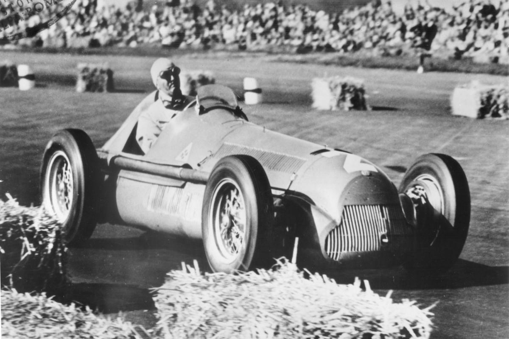
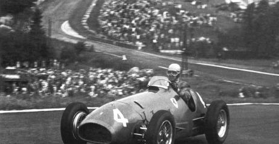
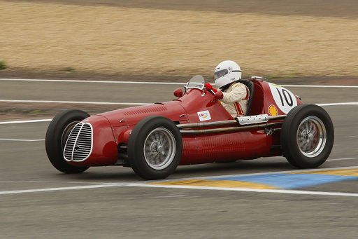

W lutym 1950 roku, włoski delegat FIA Antonio Brivio ,
zaproponował kierowcom utworzenie Mistrzostw Świata Formuły 1. Federacja podjęła decyzję o organizacji
pierwszych wyścigów na torach w Wielkiej Brytanii (Silverstone), Monako (uliczny w Monte Carlo), Szwajcarii
(Bremgarten pod Bernem), Belgii (Spa), Francji (Reims-Gueux) i Włoszech (Monza) oraz dodatkowej rundzie na
Indianapolis 500, która nadawała mistrzostwom charakter światowy, ale za Oceanem rywalizowali głównie kierowcy
amerykańscy.
Europejskie mistrzostwa lat 30.
Rozkwit motorsportu przerwała II wojna światowa, ale lata 30. stanowią fundamenty
pod powstanie Formuły 1 w 1950 roku. W 1931 Association Internationale des Automobile Clubs Reconnus
(AIACR, fr. Międzynarodowa Federacja Rozpoznania Automobilklubów) utworzyła Europejskie Mistrzostwa
Kierowców, które z przerwą na rok 1933 i 1934, były najważniejszymi międzynarodowymi zawodami przed 1939 rokiem.
Sama federacja (obecnie FIA) już od lat 20. próbowała poddać regulacji samochody, które ze sobą rywalizowały –
chociażby pod względem masy auta, co miało na celu ograniczenie pojemności silników. AIACR zajmowała się również
regulacjami samej rywalizacji – Grand Prix Monako 1933 roku było pierwszym, w którym o kolejności na starcie zdecydowały
wcześniejsze kwalifikacje, coraz częściej zakazywano wymiany kierowców podczas rywalizacji.
Ważną technologiczną zmianą okazało się umieszczenie silnika za kierowcą, przez zespół Cooper-Climax. Rozwiązanie to było stosowane przez ten zespół w Formule 3,
w latach pięćdziesiątych. Australijczyk Jack Brabham, i jego tytuły Mistrza Świata w sezonach 1959 i 1960, udowodniły przewagę tego
rozwiązania. W sezonie 1961, wszystkie regularnie startujące zespoły zaczęły stosować takie rozwiązanie
W sezonie 1961 doszło do tragicznego wypadku. 10 września na torze Monza w wyniku zderzenia z Jimem Clarkiem zginął
kierowca Ferrari Wolfgang von Trips oraz 14 widzów. Mistrzem świata w tym sezonie został Amerykanin Phil Hill.
W sezonie 1962, Lotus wprowadził samochód ze skorupową karoserią, stworzoną z aluminiowej blachy.
To rozwiązanie okazało się największym skokiem od wprowadzenia silników montowanych z tyłu samochodu. Do 1966 roku trwała
rywalizacja między Ferrari a Cooper-Climax, do której włączał się też Lotus.
W sezonie 1968, Lotus wprowadził malowanie Imperial Tobacco, w ten sposób sponsoring pojawił się w Formule 1.
Pod koniec lat 60 wprowadzono również spoilery, a amerykański kierowca Dan Gurney zastosował kask z pełną ochroną twarzy.
Docisk aerodynamiczny powoli zyskiwał znaczenie w konstrukcjach samochodów od pojawienia się profilu lotniczego w późnych latach
sześćdziesiątych. Mimo tych innowacji, Formuła 1 wciąż była
jednak bardzo niebezpiecznym sportem, i niemal w każdym sezonie ginął jakiś kierowca



Jeśli chcesz przyczynić się do rozwoju strony, podziel się z autorem swoją opinią o niej.